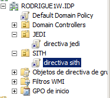
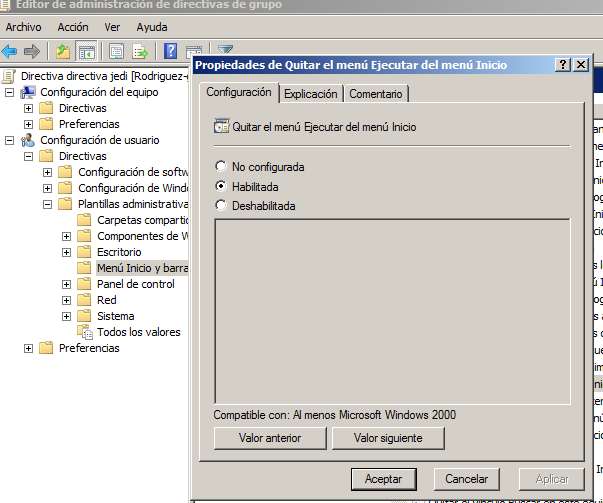
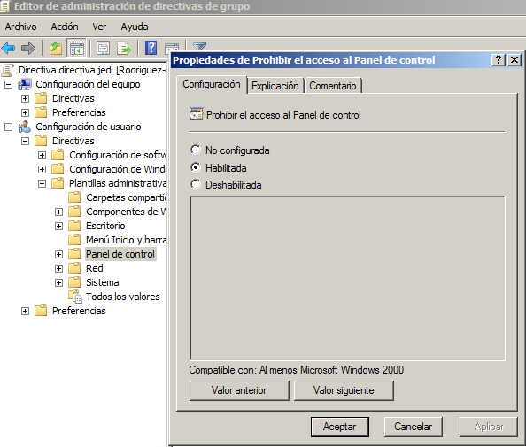
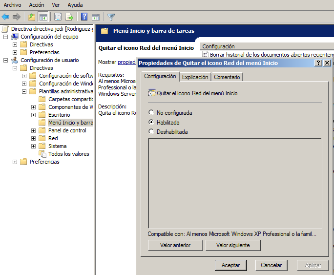
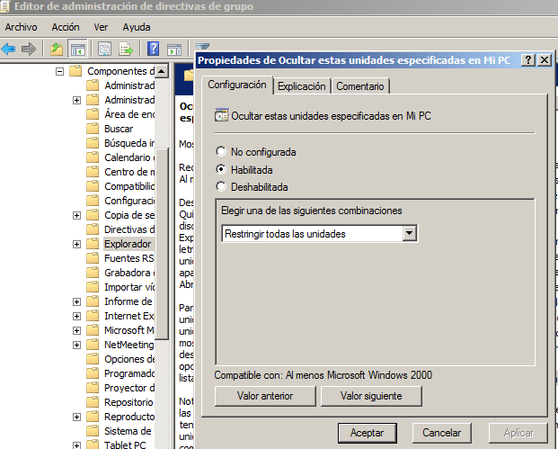
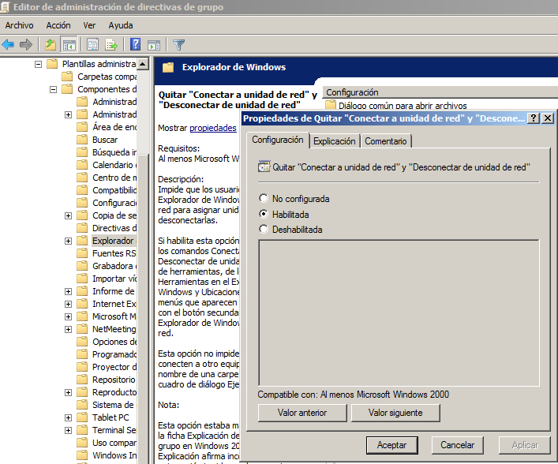

- Módulo: Sistemas Operativos
- Título del trabajo PDC Políticas o directivas de grupo.
- Componentes del grupo: Güinel Rodríguez García.
- Curso Académico: 2013/2014
- Fecha de entrega: 12 de mayo de 2014
-Establecer unas directivas para las 'ou' de 'jedi y sith'.
-Debemos establecer una configuración para la directiva de grupo prestada por el profesor.

-Para establecer la configuración correctamente debemos activar la opción habilitada a los siguientes ejemplos:
-Quitar el menú Ejecutar del menú Inicio.

-Prohibir el acceso al Panel de control.

-Quitar Conexiones de red del menú Inicio.

-Ocultar unidades específicas en Mi PC.

-Habilitar Quitar “Conectar a unidad de red” y “Desconectar de unidad de red”.
